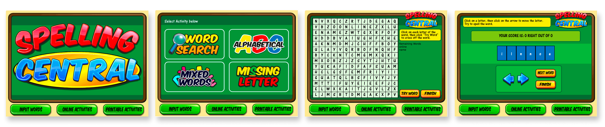
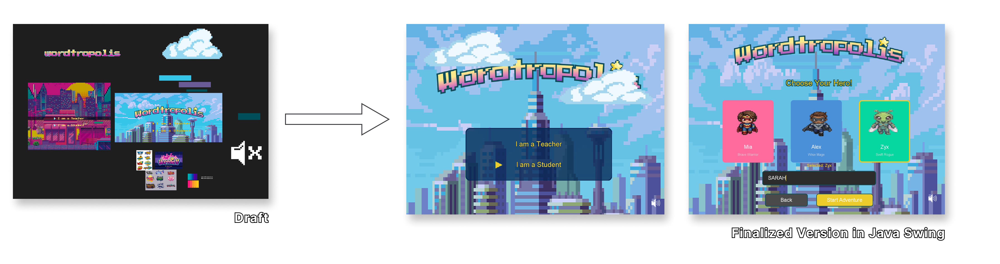
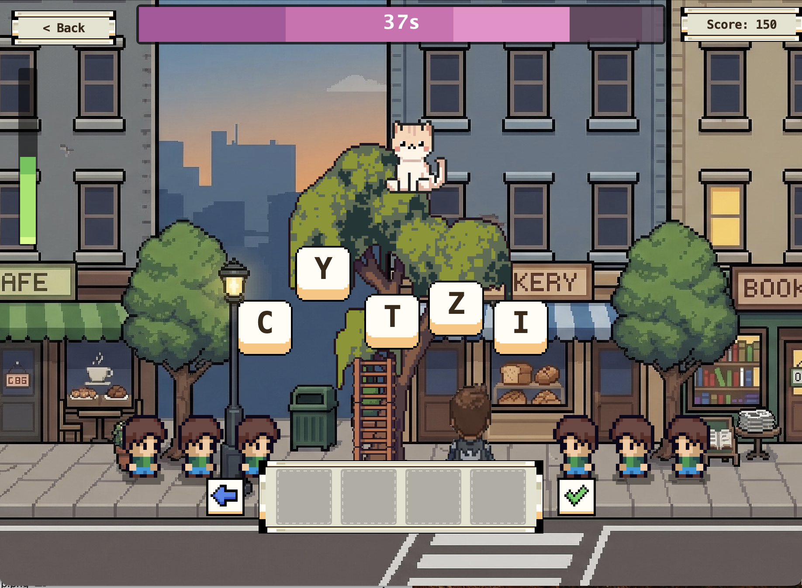

All work
Gamification · Redesign · Learning Experience Design · Child HCI
Wordtropolis
Wordtropolis turns spelling practice into missions and boss battles. Kids fight a boss to master a word instead of drilling flashcards. As UI lead, I introduced the mission-based progression system and built the full experience in Java Swing after prototyping it in Figma.
Figma
Java Swing
Gamification
Child HCI
Adaptive Learning
Multi-sensory Design
3
learning-science principles behind every decision
12wk
academic timeline, team project
Figma→Java
prototyped, then fully implemented
Project Snapshot
Challenge
The original spelling tool had low engagement and unclear feedback. It was built around delivering content, not around how kids actually stay motivated.
Solution
A mission → boss battle structure where every spelling challenge doubles as a spaced-repetition session, with adaptive difficulty and multi-sensory feedback keeping kids in the loop.
- Role: Main UI design + Java Swing implementation, within a team
- Timeline: 12 weeks, university HCI course project
- Team: Course team project
- Tools: Figma, Java Swing
The Problem
The original spelling tool was boring
by design.
That's a design failure.
We evaluated the original tool against these three failure points before touching any redesign.

The original spelling game interface.
Problem 01
Low engagement: the tool prioritized content delivery over motivation and reward loops.
Problem 02
Static, repetitive interaction: no sense of progress, story, or meaningful challenge.
Problem 03
Unclear or delayed feedback: kids didn't know what to do next or whether their answer was right.
Research → Design
Grounded in learning science, not intuition
Intrinsic motivation
Kids engage more when the challenge feels meaningful.
Spaced repetition
Returning to hard words at the right intervals improves retention.
Multi-sensory reinforcement
Visual and audio feedback together speed up learning.
The game arc structure
The mission → boss battle progression is the core information architecture. Each mission is a spaced-repetition session, and the boss battle is the mastery check. I designed the progression before making any visual decisions.
Game arc: how missions lead to the boss battle.
Key Design Decisions
Mission-based progression
Learning is structured around visible goals and milestones to keep kids engaged over time.
Adaptive challenge system
Difficulty adjusts based on performance, balancing frustration and accomplishment.
Multi-sensory feedback
Visual celebration and audio cues on correct answers reinforce learning and keep young users engaged.
Design → Build
This wasn't just a concept.
It was a fully working interactive prototype.
The full experience was drafted in Figma and implemented in Java Swing, so gameplay pacing, adaptive challenge, and feedback could be tried out beyond static mockups.
Designing through implementation
Building it showed how much pacing, feedback timing, and adaptive challenge affected engagement in practice.

Figma draft → Java Swing build.
Final Outcome

Mission screen: a spelling challenge tied to the cat character, part of the spaced-repetition loop.
Story obstacle: gives the mission stakes beyond a plain word list.
Progress gate: the adaptive challenge blocks advancement until the word is mastered.
Boss battle: the mastery check that closes each mission arc.
Outcome
- Reimagined a traditional spelling game using behavioural and child-centred UX principles.
- Explored how progression systems can support engagement and retention in learning.
- Built a fully interactive prototype with adaptive challenge and multi-sensory feedback.
- Treated the game structure as the foundation of the learning experience, not a decorative layer.
- Presented to the whole class at the end of the course and graded by the TAs and professor, earning a strong grade. It was not tested with children directly (see Reflection).
Reflection
"Working within a tight school timeline pushed me to prioritize decisions quickly and defend them clearly. With more time, I would have explored more advanced adaptive features and tested with children directly."
Back to the first case study
Fitoday